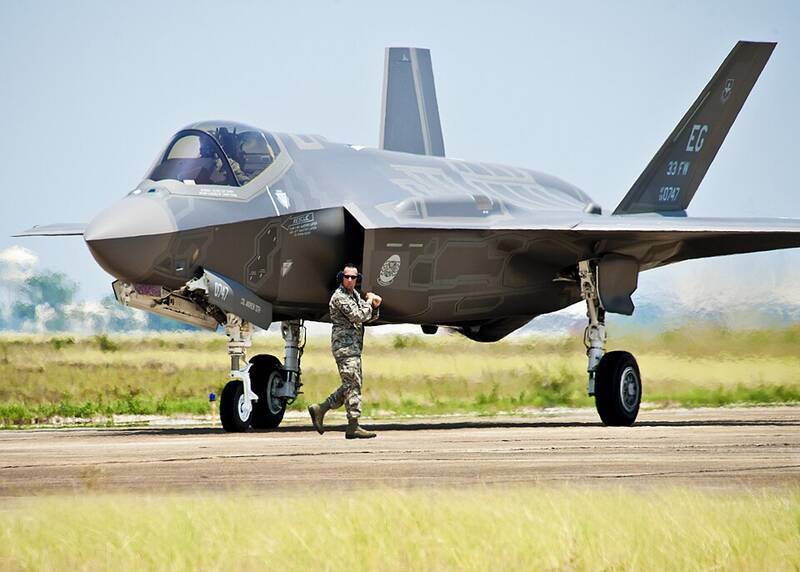

Eglin AFB
Florida

Air Force weapons testing, with one of the largest ranges in the world. 1
Open in the interactive Watcher
Sources
- Eglin Air Force Base Wikipedia
Florida

Air Force weapons testing, with one of the largest ranges in the world. 1
Open in the interactive Watcher